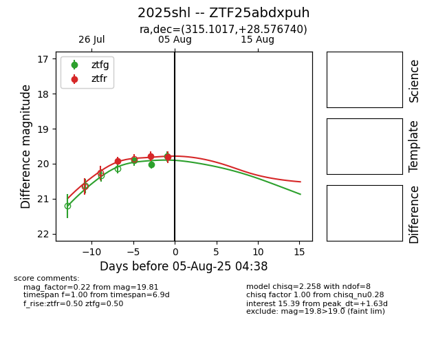

Target 2025shl at 2025-08-06 17:27, see:
FINK: fink-portal.org/2025shl
Lasair: lasair-ztf.lsst.ac.uk/objects/2025shl
ALeRCE: alerce.online/object/2025shl
TNS: wis-tns.org/object/2025shl
YSE: ziggy.ucolick.org/yse/transient_detail/2025shl
alt names
ZTF25abdxpuh (ztf,fink)
2025shl (tns,yse)
coordinates:
equatorial (ra, dec) = (315.1017,+28.57674)
galactic (l, b) = (73.6527,-11.46988)
photometry
last ztfg=19.79, ztfr=19.81
3 ztfg, 3 ztfr detections
